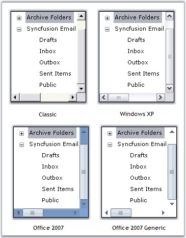
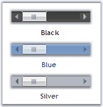
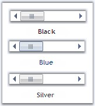

Visual Styles for the ScrollersFrame Control can be edited through VisualStyle property.
|
Property |
Description |
|
VisualStyle |
Sets the visual style for the scrollbars. The visual styles supported are,
· Classic, · WindowsXP, · Office2007 and · Office2007Generic. |
|
OfficeColorSchemes |
Sets the office color schemes for the scrollbars when VisualStyle is set to Office2007 or Office2007Generic style. The color schemes are,
· Blue, · Silver and · Black. |
|
[C#]
this.scrollersFrame1.VisualStyle = Syncfusion.Windows.Forms.ScrollBarCustomDrawStyles.Office2007; |
|
[VB.NET]
Me.scrollersFrame1.VisualStyle = Syncfusion.Windows.Forms.ScrollBarCustomDrawStyles.Office2007 |

Figure 1414: Visual Style for ScrollersFrame
|
[C#]
this.scrollersFrame1.OfficeColorScheme = Syncfusion.Windows.Forms.Office2007ColorScheme.Silver; |
|
[VB.NET]
Me.scrollersFrame1.OfficeColorScheme = Syncfusion.Windows.Forms.Office2007ColorScheme.Silver |

Figure 1415: Office2007Style Horizontal ScrollBar with Black, Blue and Silver ColorSchemes

Figure 1416: Office2007Generic Style Horizontal ScrollBar with Black, Blue and Silver ColorSchemes
Custom Colors
We can also apply custom colors to the ScrollersFrame by setting OfficeColorScheme to "Managed" and specifying the custom color through the ApplyManagedColors method as follows.
|
[C#]
this.scrollersFrame1.OfficeColorScheme = Syncfusion.Windows.Forms.Office2007ColorScheme.Managed; Office2007Colors.ApplyManagedColors(this, Color.LightSkyBlue); |
|
[VB.NET]
Me.scrollersFrame1.OfficeColorScheme = Syncfusion.Windows.Forms.Office2007ColorScheme.Managed Office2007Colors.ApplyManagedColors(Me, Color.LightSkyBlue) |

Figure 1417: Custom Color = "LightSkyBlue"
See Also
Adding Controls to the ScrollBar